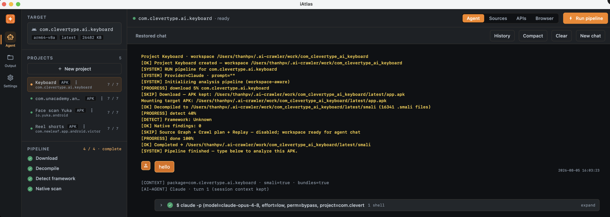
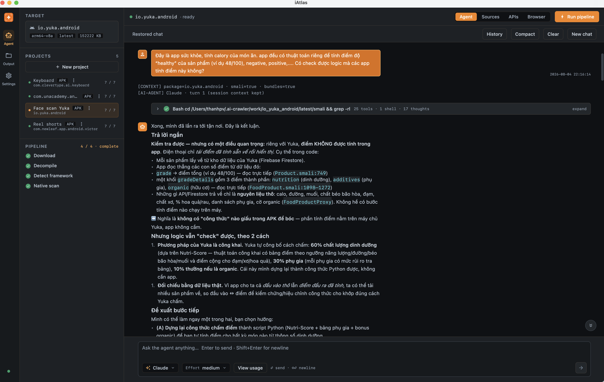

Vận hành hàng ngày
Hướng dẫn sử dụng
Ba việc lặp lại mỗi ngày: tạo project cho app hoặc website muốn xem, đợi iAtlas phân tích xong, rồi hỏi agent bằng tiếng thường. Kết quả xem ở tab APIs hoặc màn Output.
Luồng tổng quan
Ba màn chính: Agent (làm việc) · Output (file kết quả) · Settings. Trong một project có 4 tab: Agent · Sources · APIs · Browser.
1. Tạo project & chạy phân tích
Chọn loại dự án bạn cần — thao tác hai bên hơi khác nhau.
- Mở New project Ở màn Agent, sidebar trái → New project → chọn loại APK.
-
Nhập package name
Dạng
com.example.app— lấy từ link Google Play của app (phần sau?id=). Ô Name để trống cũng được. - Bấm Create project Giữ nguyên ô Download & decompile right after creating (mặc định bật) thì app tự tải APK và phân tích luôn — không phải bấm gì thêm.
-
Đợi 4 bước ở mục Pipeline
Download
Decompile
Detect framework
Native scan
Xong bước cuối là hỏi agent được. Nếu lúc tạo bạn tắt ô tải sẵn, bấm
Download & decompile ở sidebar.

Pipeline hiện 4 / 4 · complete ở sidebar trái — lúc này gõ câu hỏi vào ô chat được rồi. Bấm vào ảnh để xem cỡ lớn.
- Mở New project Sidebar trái → New project → chọn loại Web.
-
Nhập địa chỉ trang
Dán URL trang danh sách bạn muốn lấy, ví dụ
https://example.com/novels— không cần trang chủ. - Bấm Create project, rồi Run pipeline Project Web không tự chạy: bấm nút Run pipeline ở góc trên bên phải. Muốn nói rõ mục tiêu, gõ vào ô chat trước khi bấm.
- Đợi 4 bước ở mục Pipeline Probe Browser Fingerprint Crawl
-
Nếu trang bắt xác minh (Cloudflare / CAPTCHA)
Agent sẽ dừng và nhắc bạn. Mở tab Browser, làm xác minh trên trang,
rồi bấm I've completed challenge — hoặc gõ
donevào ô chat. Không cần copy cookie hay đăng nhập ở đâu khác.
Đang chạy project này thì project khác phải đợi — nhưng bạn vẫn chat được với agent
ở mọi project. Kết quả từng lần chạy nằm trong
~/.ai-crawler/output/<project>/<thời điểm>/, mở nhanh ở màn Output.
2. Chat với agent
Hỏi bằng tiếng Việt hay tiếng Anh đều được. Agent trả lời theo kết quả và việc cần làm tiếp, giữ nguyên tên API hoặc giá trị khi cần chính xác. Nhấn Enter để gửi, Shift+Enter để xuống dòng.
Ví dụ một câu hỏi thật — cứ viết như đang nhờ đồng nghiệp:
“Đây là app sức khỏe, tính calory của món ăn. app đều có thuật toán riêng để tính điểm độ “healthy” của sản phẩm (ví dụ 48/100), negative, positive,…. Có check được logic mà các app tính điểm này không?”

Vài mẹo dùng hàng ngày:
- Nói rõ định dạng bạn muốn: bảng, CSV, JSON, checklist, hay sơ đồ — agent xuất đúng dạng đó.
- Đang phân tích mà agent hỏi lại, trả lời ngay trong ô chat rồi bấm Answer & resume để chạy tiếp.
- Hỏi sang chủ đề khác thì bấm New chat; xem lại thread cũ ở History.
- Chat quá dài, agent chậm: bấm Compact để rút gọn ngữ cảnh, hoặc Clear để xoá hẳn nội dung chat hiện tại.
3. Các tab — khi nào mở
- Agent
- Nơi hỏi đáp và theo dõi tiến trình phân tích. Dùng nhiều nhất.
- Sources
- Cây file đã giải mã, chỉ đọc — mở khi muốn tự kiểm chứng một chi tiết.
- APIs
- Danh sách endpoint tìm được kèm header, tham số. Chỉnh Max pages / Skip detail pages trước khi crawl.
- Browser
- Chỉ project Web — xem trang thật, làm xác minh khi bị chặn.
- Output
- Toàn bộ file của các lần chạy: báo cáo, script, dữ liệu mẫu.
- Settings
- Tài khoản AI, đường dẫn công cụ, kiểm tra khi có lỗi.
4. Prompt mẫu theo vai trò
PM / BA — IAP “Tóm tắt flow mua hàng trong app (IAP): các màn hình, điều kiện hiện offer, và điểm gọi API thanh toán. Xuất dạng checklist + sơ đồ sequence Mermaid.”
PM / BA — IAA & tracking “Liệt kê các sự kiện tracking / quảng cáo (IAA) tìm được: tên event, khi nào fire, param quan trọng. Bảng Markdown.”
PM / BA — rating “App khi nào hiện popup rating? Điều kiện, tần suất, copy nếu có trong nguồn. Trả lời ngắn rồi kèm bảng bằng chứng.”
Content “Crawl / liệt kê cấu trúc nội dung listing (chuyên mục, field tiêu đề/mô tả/ảnh). Xuất taxonomy dạng bảng để team content tham khảo.”
Dev — API graph “Vẽ API graph các endpoint liên quan feed và detail theo id: method, path, header bắt buộc, quan hệ gọi. Mermaid hoặc bảng.”
Dev — schema & DB “Với endpoint …/feed: mô tả request/response field (kiểu, bắt buộc?). Đề xuất draft bảng database tương ứng (tên cột + kiểu).”
Mọi người — format tùy ý “Trả lời bằng CSV: cột Feature, Flow step, API path, Ghi chú — chỉ các bước liên quan onboarding.”
5. Cần biết trước khi dùng
- Mọi phân tích chạy trên file đã tải về máy bạn — không cần điện thoại, máy ảo hay cài gì lên thiết bị.
- Bạn sẽ không bao giờ bị yêu cầu copy token hay cookie từ điện thoại.
- Phần kỹ thuật khó (ví dụ khoá bí mật nằm trong file của app) agent tự xử lý. Chỉ khi một bước bắt buộc phải có tài khoản, agent mới hỏi email/mật khẩu bạn đã có sẵn.
- Mỗi lúc chỉ một project chạy phân tích; chat ở project khác vẫn bình thường.